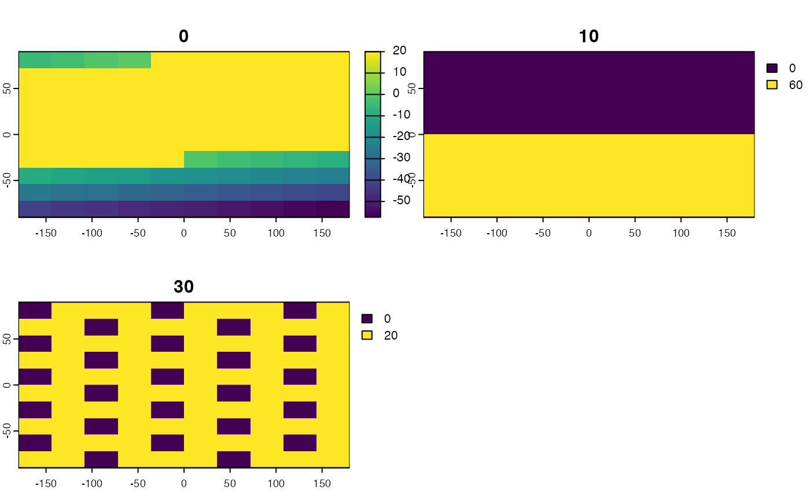

Calculates multivariate environmental similarity surface based on model calibration and projection data
MESS3D(calibration, projection)A data.frame of environmental variables
used to calibrate an ecological niche model, one row for
measurements from each voxel included in the data used to
calibrate the model. Columns with names not corresponding to
projection list items are ignored.
A named list of SpatRaster objects for
projection; names correspond to calibration column names.
Each SpatRaster should have the same number of layers,
corresponding to vertical depth slices.
A SpatRaster vector with MESS scores for each
voxel; layer names correspond to layer names of first
SpatRaster vector in projection list.
MESS3D is a wrapper around MESS from the modEvA
package. It calculates MESS for each depth layer. Negative values
indicate areas of extrapolation which should be interpreted with
caution (see Elith et al, 2010 in MEE).
The calibration dataset should include both presences and background/pseudoabsence points used to calibrate an ecological niche model.
Elith J, Kearney M, and Phillips S. 2010. The art of modelling range-shifting species. Methods in Ecology and Evolution, 1, 330-342.
library(terra)
#> terra 1.7.78
library(dplyr)
#>
#> Attaching package: ‘dplyr’
#> The following objects are masked from ‘package:terra’:
#>
#> intersect, union
#> The following objects are masked from ‘package:stats’:
#>
#> filter, lag
#> The following objects are masked from ‘package:base’:
#>
#> intersect, setdiff, setequal, union
# Create sample rasterBricks
r1 <- rast(ncol=10, nrow=10)
values(r1) <- 1:100
r2 <- rast(ncol=10, nrow=10)
values(r2) <- c(rep(20, times = 50), rep(60, times = 50))
r3 <- rast(ncol=10, nrow=10)
values(r3) <- 8
envBrick1 <- c(r1, r2, r3)
names(envBrick1) <- c(0, 10, 30)
r1 <- rast(ncol=10, nrow=10)
values(r1) <- 100:1
r2 <- rast(ncol=10, nrow=10)
values(r2) <- c(rep(10, times = 50), rep(20, times = 50))
r3 <- rast(ncol=10, nrow=10)
values(r3) <- c(rep(c(10,20,30,25), times = 25))
envBrick2 <- c(r1, r2, r3)
names(envBrick2) <- c(0, 10, 30)
rastList <- list("temperature" = envBrick1, "salinity" = envBrick2)
# Create test reference set
set.seed(0)
longitude <- sample(ext(envBrick1)[1]:ext(envBrick1)[2],
size = 10, replace = FALSE)
set.seed(0)
latitude <- sample(ext(envBrick1)[3]:ext(envBrick1)[4],
size = 10, replace = FALSE)
set.seed(0)
depth <- sample(0:35, size = 10, replace = TRUE)
occurrences <- as.data.frame(cbind(longitude,latitude,depth))
# Calibration
calibration <- lapply(rastList, FUN = function(x) xyzSample(occurrences, x)) %>% bind_rows
#> Using longitude, latitude, and depth
#> as x, y, and z coordinates, respectively.
#> Using longitude, latitude, and depth
#> as x, y, and z coordinates, respectively.
# Run the function
messStack <- MESS3D(calibration = calibration, projection = rastList)
plot(messStack)
